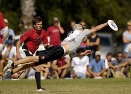
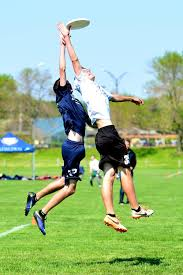

Ultimate Frisbeea handler prepares to release his throw while his defender attempts to block him.
The Sport of Flat
Ultimate Frisbee is a sport in which two teams attempt to score a goal via throwing and catching a disc to their teammates until they are past the goal line. The thrower must remain stationary and their teammates dart around trying to catch a passed disc. upon successful completion of said pass, the runner must now become the thrower and remain stationary. At its heart, the game is nothing more than catch with extra steps, and while there are rules enough to make competitive play possible, what makes Ultimate frisbee more than just a game of soccer with a piece of flat plastic is "The Spirit Of The Game." This is the highest priority of Ultimate and it's what makes it so accessible, enjoyable, and my personal favorite sport.

a layout catch is difficult, but also is both satisfying and dramatic.
The Spirit leads.
Spirit of the game is not a set of rules, but a mindset that puts others first. The website of The World Flying disc Federation (WFDF) states it this way: "All players are responsible for administering and adhering to the rules. Ultimate relies upon a Spirit of the Game that places the responsibility for fair play on every player. It is trusted that no player will intentionally break the rules; thus there are no harsh penalties for breaches, but rather a method for resuming play in a manner which simulates what would most likely have occurred had there been no breach. Highly competitive play is encouraged, but should never sacrifice the mutual respect between players, adherence to the agreed‑upon rules of the game, or the basic joy of play."
This emphasis on sportsmanship, cooperation, and enjoyment is why, at most levels of play, ultimate is a universally enjoyable experience. It makes it an inclusive experience for new players while keeping more advanced players from getting too intense in their competition because it recognizes that the activity is simply a game. Thos in turn makes for much safer play because all physical contact is discouraged. College and higher league play does tend to lean more towards competition, but the core of the game shines through and the spirit of the game is evident.

height can be an advantage.
Why I love Ultimate Frisbee
I have been playing ultimate Frisbee for about 6 years and hope to continue for many years. Our group plays weekly all year round and sometimes twice a week. I love the exercise and the competition and the people i play with. However, i would not enjoy it nearly as much if the core tenant was simply to win. The foundation of the game is what makes it so great to play and be a part of. it takes what would be just another sport and makes it welcoming, unselfish and again, fun! It is, after all, just a game.